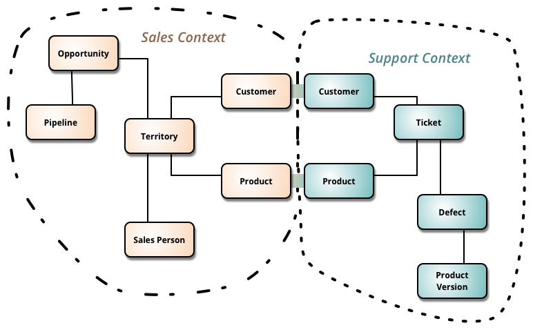

- 001 「战略篇」访谈 DDD 和微服务是什么关系？.md.html
- 002 「战略篇」开篇词：领域驱动设计，重焕青春的设计经典.md.html
- 003 领域驱动设计概览.md.html
- 004 深入分析软件的复杂度.md.html
- 005 控制软件复杂度的原则.md.html
- 006 领域驱动设计对软件复杂度的应对（上）.md.html
- 007 领域驱动设计对软件复杂度的应对（下）.md.html
- 008 软件开发团队的沟通与协作.md.html
- 009 运用领域场景分析提炼领域知识（上）.md.html
- 010 运用领域场景分析提炼领域知识（下）.md.html
- 011 建立统一语言.md.html
- 012 理解限界上下文.md.html
- 013 限界上下文的控制力（上）.md.html
- 014 限界上下文的控制力（下）.md.html
- 015 识别限界上下文（上）.md.html
- 016 识别限界上下文（下）.md.html
- 017 理解上下文映射.md.html
- 018 上下文映射的团队协作模式.md.html
- 019 上下文映射的通信集成模式.md.html
- 020 辨别限界上下文的协作关系（上）.md.html
- 021 辨别限界上下文的协作关系（下）.md.html
- 022 认识分层架构.md.html
- 023 分层架构的演化.md.html
- 024 领域驱动架构的演进.md.html
- 025 案例 层次的职责与协作关系（图文篇）.md.html
- 026 限界上下文与架构.md.html
- 027 限界上下文对架构的影响.md.html
- 028 领域驱动设计的代码模型.md.html
- 029 代码模型的架构决策.md.html
- 030 实践 先启阶段的需求分析.md.html
- 031 实践 先启阶段的领域场景分析（上）.md.html
- 032 实践 先启阶段的领域场景分析（下）.md.html
- 033 实践 识别限界上下文.md.html
- 034 实践 确定限界上下文的协作关系.md.html
- 035 实践 EAS 的整体架构.md.html
- 036 「战术篇」访谈：DDD 能帮开发团队提高设计水平吗？.md.html
- 037 「战术篇」开篇词：领域驱动设计的不确定性.md.html
- 038 什么是模型.md.html
- 039 数据分析模型.md.html
- 040 数据设计模型.md.html
- 041 数据模型与对象模型.md.html
- 042 数据实现模型.md.html
- 043 案例 培训管理系统.md.html
- 044 服务资源模型.md.html
- 045 服务行为模型.md.html
- 046 服务设计模型.md.html
- 047 领域模型驱动设计.md.html
- 048 领域实现模型.md.html
- 049 理解领域模型.md.html
- 050 领域模型与结构范式.md.html
- 051 领域模型与对象范式（上）.md.html
- 052 领域模型与对象范式（中）.md.html
- 053 领域模型与对象范式（下）.md.html
- 054 领域模型与函数范式.md.html
- 055 领域驱动分层架构与对象模型.md.html
- 056 统一语言与领域分析模型.md.html
- 057 精炼领域分析模型.md.html
- 058 彩色 UML 与彩色建模.md.html
- 059 四色建模法.md.html
- 060 案例 订单核心流程的四色建模.md.html
- 061 事件风暴与业务全景探索.md.html
- 062 事件风暴与领域分析建模.md.html
- 063 案例 订单核心流程的事件风暴.md.html
- 064 表达领域设计模型.md.html
- 065 实体.md.html
- 066 值对象.md.html
- 067 对象图与聚合.md.html
- 068 聚合设计原则.md.html
- 069 聚合之间的关系.md.html
- 070 聚合的设计过程.md.html
- 071 案例 培训领域模型的聚合设计.md.html
- 072 领域模型对象的生命周期-工厂.md.html
- 073 领域模型对象的生命周期-资源库.md.html
- 074 领域服务.md.html
- 075 案例 领域设计模型的价值.md.html
- 076 应用服务.md.html
- 077 场景的设计驱动力.md.html
- 078 案例 薪资管理系统的场景驱动设计.md.html
- 079 场景驱动设计与 DCI 模式.md.html
- 080 领域事件.md.html
- 081 发布者—订阅者模式.md.html
- 082 事件溯源模式.md.html
- 083 测试优先的领域实现建模.md.html
- 084 深入理解简单设计.md.html
- 085 案例 薪资管理系统的测试驱动开发（上）.md.html
- 086 案例 薪资管理系统的测试驱动开发（下）.md.html
- 087 对象关系映射（上）.md.html
- 088 对象关系映射（下）.md.html
- 089 领域模型与数据模型.md.html
- 090 领域驱动设计对持久化的影响.md.html
- 091 领域驱动设计体系.md.html
- 092 子领域与限界上下文.md.html
- 093 限界上下文的边界与协作.md.html
- 094 限界上下文之间的分布式通信.md.html
- 095 命令查询职责分离.md.html
- 096 分布式柔性事务.md.html
- 097 设计概念的统一语言.md.html
- 098 模型对象.md.html
- 099 领域驱动设计参考过程模型.md.html
- 100 领域驱动设计的精髓.md.html
- 101 实践 员工上下文的领域建模.md.html
- 102 实践 考勤上下文的领域建模.md.html
- 103 实践 项目上下文的领域建模.md.html
- 104 实践 培训上下文的业务需求.md.html
- 105 实践 培训上下文的领域分析建模.md.html
- 106 实践 培训上下文的领域设计建模.md.html
- 107 实践 培训上下文的领域实现建模.md.html
- 108 实践 EAS 系统的代码模型.md.html
- 109 后记：如何学习领域驱动设计.md.html
021 辨别限界上下文的协作关系（下）
领域模型产生的依赖
针对领域行为产生的依赖，我们可以通过抽象接口来解耦。例如，前面提到订单上下文对促销上下文的调用就通过引入防腐层（ACL）解除了对促销上下文的直接依赖；然而，限界上下文依赖的领域模型呢，又该如何处理？
与领域行为相同，我们首先还是要判断限界上下文是否真正对别的领域模型产生了依赖！例如，要查询客户拥有的所有订单信息，应该像如下代码那样将订单列表当做客户的一个属性吗？
public class Customer {
private List<SaleOrder> saleOrders;
public List<SaleOrder> getSaleOrders() {
return saleOrders;
}
}
如果采取这样的设计，自然就会在客户上下文中产生对 SaleOrder 领域模型的依赖，然而，这种实现并不可取。因为这样的设计会导致在加载 Customer 时，需要加载可能压根儿就用不上的List<SaleOrder>，影响了性能。虽然通过延迟加载可以在一定程度解决性能问题，但既然存在延迟加载，就说明二者不一定总是同时需要。故而，延迟加载成为了判断领域实体对象设计是否合理的标志。
那么，是否可以用查询方法来替换属性？例如：
public class Customer {
public List<SaleOrder> saleOrders() {
// ...
}
}
在领域驱动设计中，我们通常不会这样设计，而是引入资源库对象来履行查询职责。若要查询订单，则 SaleOrder 会作为聚合根，对应的 SaleOrderRepository 作为资源库被放到订单上下文。在分层架构中，资源库对象可能会被封装到应用服务中，也可能直接暴露给作为适配器的 REST 服务中，例如，定义为：
@Path("/saleorder-context/saleorders/{customerId}")
public class SaleOrderController {
@Autowired
private SaleOrderRepository repository;
public List<SaleOrder> allSaleOrdersBy(CustomerId customerId) {
return repository.allSaleOrdersBy(customerId);
}
}
REST 服务的调用者并非客户上下文，而是前端或第三方服务以及客户端，貌似自然的客户与订单的包含关系，就如此被解开了。客户上下文与订单上下文并没有因为客户与订单的包含关系，使得它们二者产生协作。
如果确实存在跨限界上下文消费领域模型的场景，例如，订单上下文在查询订单时需要获得订单对应的商品信息时，我们该如何设计？存在两种设计决策：
- 在订单上下文中重用商品上下文的领域模型，即两个限界上下文之间采用遵奉者模式，且商品上下文作为上游。
- 在订单上下文中定义属于自己的与 Product 有关的领域模型。
在确定采用何种设计决策时，又会受到限界上下文边界的影响！进程内和进程间边界带来的影响是完全不同的。倘若商品上下文与订单上下文属于两个架构零共享的限界上下文，就不应采用重用领域模型的方式。因为这种模型的重用又导致了二者不再是“零共享”的。之所以采用零共享架构，是希望这两个限界上下文能够独立演化，包括部署与运行的独立性。倘若一个限界上下文重用了另一个限界上下文的领域模型，就意味着二者的代码模型是耦合的，即产生了包之间的依赖，而非服务的依赖。一旦该重用的模型发生了变化，就会导致依赖了该领域模型的服务也要重新部署。零共享架构带来的福利就荡然无存了。
如果二者之间的通信是发生在进程内，又该如何决策呢？
这其实是矛盾的两面，以 Product 领域对象为例：
- 重用：当需求发生变更，需要为商品增加新的属性时，可以保证只修改一处，避免了霰弹式修改；但是，如果两个限界上下文对商品的需求不相同，Product 领域对象就需要同时应对两种不同的需求，随着需求的逐渐演化，可能会导致 Product 对象渐渐成为一个低内聚的对象，这就是所谓的“重用的代价”。
- 分离：在两个限界上下文中分别建立 Product 领域对象，这会带来代码的重复，当两个限界上下文都需要商品的新属性时，两边的领域模型都需要修改；倘若两个上下文对商品的需求并不相同，分离的两个模型就可以独自应对不同的需求变化了，这就是所谓的“独立演化”。
事实上，在两个不同的限界上下文中为相同或相似的领域概念分别建立独立的领域模型为常见做法。例如，Martin Fowler 在介绍限界上下文时，就给出了如下的设计图：

Sales Context 与 Support Context 都需要客户与商品信息，但它们对客户与商品的关注点是不相同的。销售可能需要了解客户的性别、年龄与职业，以便于他更好地制定推销策略，售后支持则不必关心这些信息，只需要客户的住址与联系方式。正如前面在讲解限界上下文的边界时，我们已经提到了限界上下文作为保持领域概念一致性的业务边界而存在。上图清晰地表达了为两个不同限界上下文分别建立独自的 Customer 与 Product 领域模型对象，而非领域模型的重用。
我个人倾向于分离的领域模型，因为相较于维护相似领域对象的成本，我更担心随着需求变化的不断发生需要殚精竭虑地规避（降低）重用的代价。
当我们选择分离方式时，很多人会担心所谓的“数据同步”问题，其实只要我们正确地进行了领域建模，这个问题是不存在的。大体说来，这种数据同步可能存在以下三种情况：
- 数据存在一处，领域模型仅仅是内存中的对象。例如，前面提到的订单上下文获得的商品对象。商品的信息无疑还是持久化在商品上下文的数据库中，在订单上下文定义的 Product 领域对象，仅仅是商品上下文中 Product 对象在内存中的一种转换，订单上下文并不承担持久化商品信息的职责。
- 数据按照不同的业务边界分散存储，但它们之间用相同的 Identity 来保持关联。例如，在前面介绍的限界上下文的业务边界时提到的 Product 案例。采购上下文、市场上下文、仓储上下文、推荐上下文与产品上下文对产品关注的属性并不相同，因此它们关心的数据应该被分散存储到各自的数据库中，并未出现数据冗余的情况。
- 数据虽然出现了冗余，但是导致它们产生变化的原因却不相同。例如，订单中包含了配送地址与联系人信息，这些信息在客户中同样存在。当客户修改了配送地址以及联系人信息时，是否需要同步保存在订单中的对应信息？事实上，这种情况并不需要同步。因为当客户提交订单后，订单的配送地址与联系人信息就与提交订单的买家脱离了关系，而被订单上下文单独管理。客户更新自己的配送地址，并不会影响到已有订单的配送地址。如果订单还未完成，客户希望修改订单中的配送地址和联系人信息，这个修改也是发生在订单上下文。
数据产生的依赖
所谓“数据产生的依赖”，来自于数据库。倘若严格遵循领域驱动设计，通常不会产生这种数据库层面的依赖，因为我们往往会通过领域模型的资源库去访问数据库，与数据库交互的对象也应该是领域模型对象（实体和值对象）。即使有依赖，也应该是领域行为与领域模型导致的。
有时候，出于性能或其他原因的考虑，一个限界上下文去访问属于另外一个限界上下文边界的数据时，有可能跳过领域模型，直接通过 SQL 或存储过程的方式对多张表执行关联查询，CQRS 模式的读模型（Read Model）正是采用了这种形式。而在许多报表分析场景中，这种访问跨限界上下文数据表的方式确实是最高效最简单的实现方式。当然，这一切建立在一个前提：即限界上下文之间至少是数据库共享的。
我们必须警惕这种数据产生的依赖，没有绝对的理由，我们不要轻易做出这种妥协。SQL 乃至存储过程形成的数据表关联，是最难进行解耦的。一旦我们的系统架构需要从单体架构（或数据库共享架构）演进到微服务架构，最大的障碍不是代码层面而是数据库层面的依赖，这其中就包括大量复杂的 SQL 与存储过程。
SQL 与存储过程的问题在于：
- 无法为 SQL 与存储过程编写单元测试，无法对其进行调试，也不利于缺陷排查。
- SQL 与存储过程的可读性通常较差，也较难对其进行重用。
- SQL 与存储过程的优化策略限制太大，虽然看起来 SQL 或存储过程的运行更贴近数据库，似乎性能更佳，但是无法在架构层面上对其进行进一步的优化，如分库分表以及水平扩展。
如果选择使用 SQL 与存储过程，当数据库自身出现瓶颈时，会陷入进退两难的境地，要么继续保持使用 SQL 与存储过程，但调优空间非常小；要么就采用垂直扩展，直接更换性能更好的机器。但这种应对方法无异于饮鸩止渴，不能解决根本问题。如果想要去掉 SQL 与存储过程，又需要对架构做重大调整，需要耗费较大的架构重构成本，对架构师的能力也要求颇高。在调整架构时，由于需要将 SQL 与存储过程中蕴含的业务逻辑进行迁移，还可能存在迁移业务逻辑时破坏原有功能的风险。选择架构调整，需得管理层具备壮士扼腕的勇气与魄力才行。
无论是零共享架构的分库模式，还是数据库共享模式，我们都需要尽量避免因为在数据库层面引起多个限界上下文的依赖。获取数据有多种方式，除了通过领域模型中聚合根的资源库访问数据之外，我们也可以通过数据同步的方式，对多个限界上下文的数据进行整合。例如，电商网站的推荐系统，它将作为整个系统中一个独立的限界上下文。为了获得更加精准精细的推荐结果，推荐系统需要获取买家的访问日志、浏览与购买的历史记录、评价记录，需要获得商品的类别、价格、销售量、评价分数等属性，需要获取订单的详细记录，是否有退换货等一系列的信息。但这并不意味着推荐上下文会作为客户上下文、商品上下文、订单上下文等的下游客户方，也未必需要在数据库层面对多张表执行关联操作。
推荐算法的数据分析往往是一个大数据量分析，它需要获得的数据通常存储在扮演 OLTP（On-Line Transaction Processing，联机事务处理）角色的业务数据库。业务数据库是支撑系统业务应用的主要阵地，并被各种请求频繁读写。倘若该数据库成为瓶颈，有可能会影响到整个电商系统的运行；倘若推荐系统通过上游限界上下文的服务从各自的数据库中加载相关数据，并存入到内存中进行分析，会大量耗用网络资源和内存资源，影响电商网站的业务系统，也无法保证推荐系统的性能需求。
从数据分析理论来说，作为 OLTP 的业务数据库是面向业务进行数据设计的，这些数据甚至可能独立存在，并未形成数据仓库的主题数据特征，即集成了多个业务数据库，并能全面一致体现历史数据变化。因此，推荐系统需要利用大数据的采集技术，通过离线或实时流处理方式采集来自多数据源的多样化数据，然后可结合数据仓库技术，为其建立主题数据区和集市数据区，为 OLAP（On-Line Analytical Processing，联机分析处理）提供支撑，也为如协同决策这样的推荐算法提供了数据支持。
当然，推荐系统需要“知道”的数据不仅限于单纯的客户数据、商品数据与订单数据，还包括针对客户访问与购买商品的行为数据，如查询商品信息、添加购物车、添加订单、提交评论等行为产生的数据，这些行为数据未必存储在业务数据库中，相反可能会以如下形式存储：
- 日志：即记录这些行为数据为日志信息。我们可以将每次产生的日志存放到 ElasticSearch 中，并作为推荐系统要访问的数据库，常见架构就是所谓的 ELK（ElasticSearch + LogStash + Kibana）架构。
- 事件：倘若采用事件溯源（Event Sourcing）模式，每次行为都会触发一个事件，并通过事件存储（Event Store）将它们存储到对应的数据库中，以待推荐系统读取这些事件溯源数据，结合业务数据运用推荐算法进行计算。
由于推荐系统需要分析的数据已经通过专门的数据采集器完成了多数据源数据的采集，并写入到属于推荐上下文的主题数据库中，因而并不存在与其他业务数据库之间的依赖。从实现看，推荐上下文作为一个独立的限界上下文，与其他限界上下文之间并不存在依赖关系，属于上下文映射的“分离方式”模式。从这个例子获得的经验是：技术方案有时候会影响到我们对上下文映射的识别。